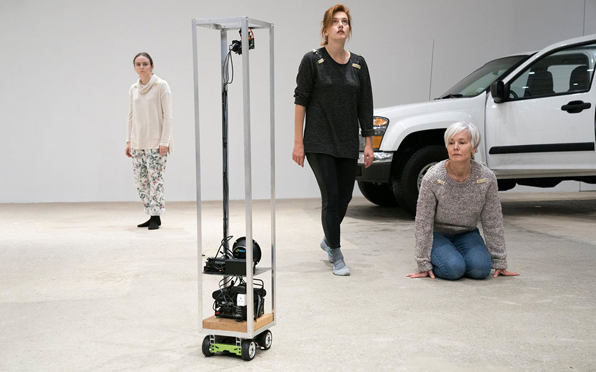
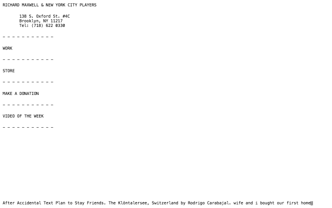
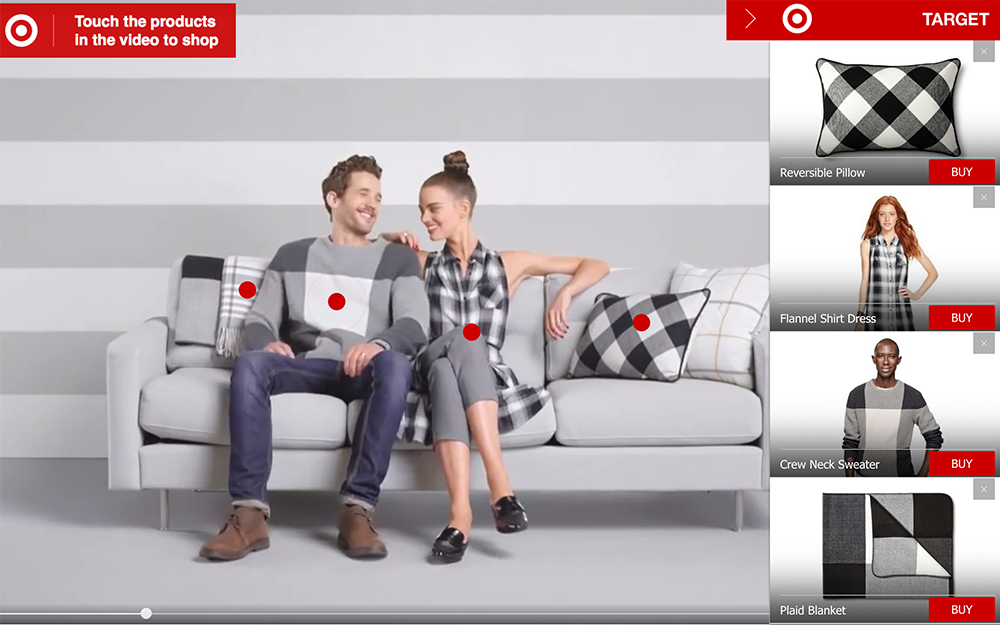
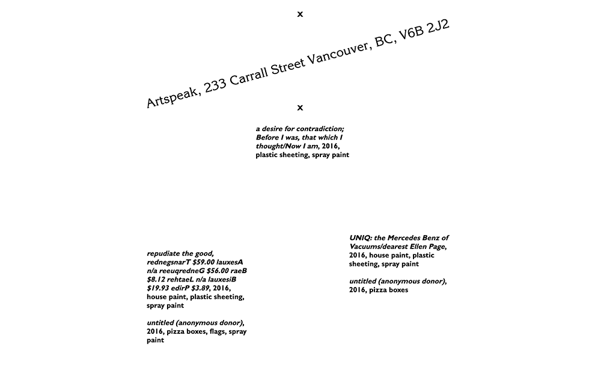

zackrdavis

A Robot Actor
Developed for Richard Maxwell's Paradiso, the robot delivers lines, visually tracks fellow actors, and generates a unique script during each performance. Paradiso was a NYT Critic's Pick.
Shared Space
A minimal platform for collaborative visual research. No longer in use or development.

New York City Players
Typed-while-you-watch homepage for the New York City Players theater company. Designed by Scott Ponik.

FuiszVideo
Frontend engineer at FuiszVideo, an ad publishing platform that used machine vision to make objects in videos interactive.
